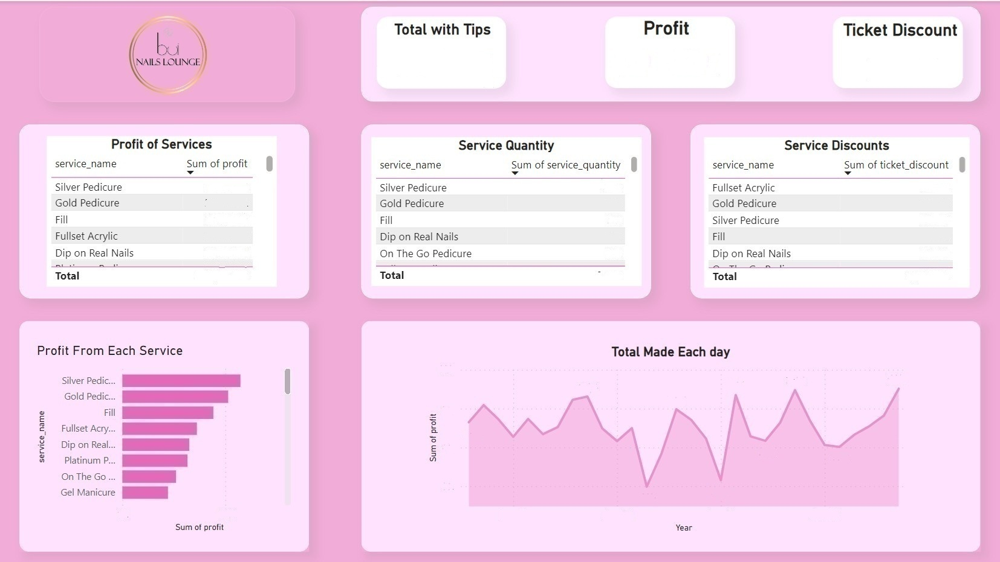
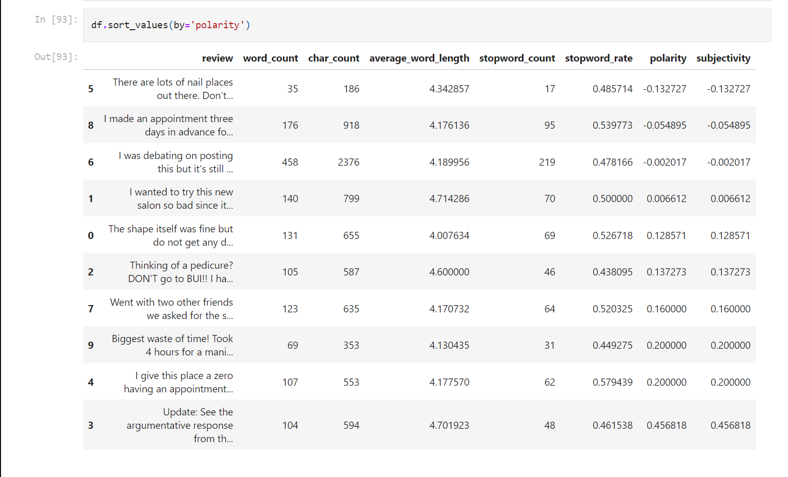

BUI Nails Lounge
• Reported directly to CEO as analytics lead, designing and developing a Power BI dashboard to provide a rich visual summary of daily purchase patterns. Enabled data-driven decisions by the board of directors.
• Designed and developed a SQL database to store customer and sales data. Skillfully queried and analyzed the data to deliver valuable insights driving critical business decisions.
• Utilized natural language processing in Python to analyze reviews, growing revenue and improving customer experiences.
• Created and automated aesthetically pleasing email campaigns with Python, delivering a 20% increase in open rates.
HIGHLIGHTED ACCOMPLISHMENT:
• Generated an additional $240,000 in estimated annual revenue by analyzing data and creating visualizations in SQL, Python, and Power BI that enabled data-driven business decisions.

Power BI Monthly Reports
Designed interactive Power BI dashboards to track key monthly metrics for the BUI Nails lounge such as revenue, customer visits, and service usage. The data visualizations and insights enabled informed business decisions and strategic planning around marketing, staffing, and service offerings.

Customer Review Sentiment Analysis
Leveraged natural language processing and machine learning algorithms in Python to analyze customer reviews and classify their sentiment. This analysis provided actionable insights to improve products and services, resulting in increased customer satisfaction.
View Code
Sacramento County
• Streamlined data management and enhanced healthcare efficiency by utilizing SureScripts to import over 4,000 inmate medical records into AthenaHealth.
• Optimized workflow and improved departmental efficiency by efficiently leading the scanning of 10,000 inmate medical records monthly, including Epic medical documentations.
• Independently improved data processing by decreasing scanning run time for inmate records by 25% through workflow analysis and refinement.